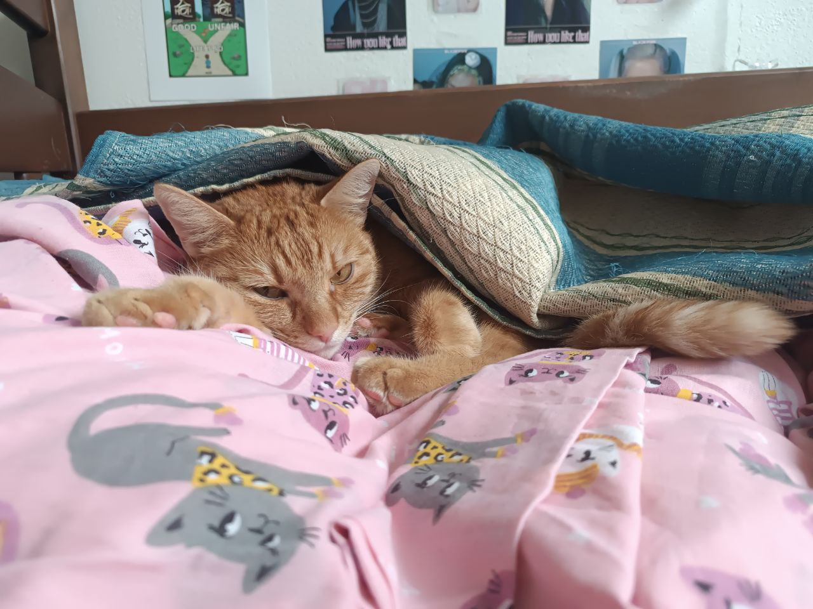

Hi! Welcome to my page! In this page I'm gonna tell you about my cat "Luxor"!!
Down you can see him!!
- About my Luxor -
His name is Luxor. He is 3 years old. We do not know which breed cat is he, he is just orange cat that loves food.

- Where does he lives? -
We took him from another city in Czech Republic Chrudim and now he lives with us in Prague.
Before he lived in big house with garden, so he could go outside, after we took he he lives only in apartament and from this moment he is afraid of streets.
He loves warm places in the house, so most likely we can find him on the bed or under or next, just around the bed.
He is about 4.5 kg
Interesting facts about him
- He loves to revenge
- He has freckles
- He loves to eat
- Before he had green eyes, but they changet to orange one
- He feels like lion
- What does he eat? -
Luxor is type of cat that eats only what he likes.
- Canned food for cats
- Fish
- Dry food for cats
Nothing more!!

- Interesting facts about cats -
- Cats sleep 12 - 16 hours a day, and some can sleep up to 20 hours
- A cat's nose print is unique, like a human fingerprint
- Cats have 32 muscles in each ear, allowing them to rotate their ears independently
- They can jump up to 6 times their body length in a single leap
- Some facts about cats -
| Facts | Details |
| 🐾 Purring | Purring can help cats relax and heal |
| 👂 Hearing | Cats can hear higher sounds than humans |
| 👀 Vision | Cats see well in low light but not in total darkness |
- Useful websites -

- Now gimme your feedback about my website -